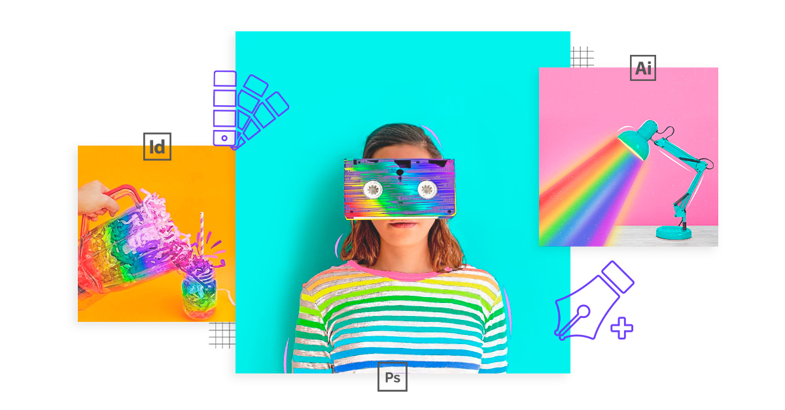

Ahora que ya hemos despejado las dudas sobre qué es diseño gráfico y cuál es su principal ámbito de actuación, veamos quién es el diseñador gráfico. Un diseñador gráfico es un especialista en la configuración de mensajes visuales. Por ello, debe tener habilidades como la de ser ordenado, creativo y expresivo. Por muchas dotes que tenga de una de estas opciones, si no cuenta con las otras, es probable que no obtenga el resultado deseado. Asimismo, este profesional debe tener formación o interés por otros ámbitos como la estética de la imagen, la creación original o las nuevas tecnologías informáticas de diseño. Un diseñador gráfico es un profesional de la comunicación visual. Su misión va más allá de realizar bocetos, dibujos y diseños; ya que tiene como principal objetivo plasmar en imágenes los mensajes que se quieren trasmitir. Un diseñador gráfico también puede encargarse de muchas tareas (branding, diseño publicitario, animaciones, multimedia, internet…). Por este motivo cada vez es más frecuente que se cada diseñador se especialice en algo en lo que es realmente bueno. Este profesional es versátil, es capaz d e usar todos los elementos visuales para crear una composición que funcione para varios soportes publicitarios. Por ejemplo, puede crear un folleto informativo que plasme la identidad corporativa de una web. Este profesional de las artes gráficas es capaz de utilizar los programas informáticos dedicados al diseño gráfico. Por ejemplo, debe ser capaz de realizar proyectos en Photoshop, uno de los programas de diseño gráfico más utilizados en la actualidad. Asimismo, debe sentir entusiasmo por las nuevas tecnologías y las últimas apariciones relacionadas con ella.
| ----- | HABILIDADES DE UN DISEÑADOR GRAFICO | DISEÑADOR GRÁFICO |
|---|---|---|
CREATIVO Y VERSÁTIL |
No tenemos ninguna duda de que quien acude a un diseñador gráfico, tiene un motivo básico. Quiere un resultado único, que llame la atención, llegue a su público objetivo y lance un mensaje en concreto. Por ello, una de las mayores capacidades que debe tener es la creatividad y la imaginación. Destacar por encima del resto de diseños debe ser su máxima. Fijarte en las nuevas tendencias en diferentes ámbitos te permitirá desarrollar nuevas ideas. Sin embargo, no caigas en la idea de que copiar diseños es una buena opción. |
Un diseñador gráfico es un especialista en la configuración de mensajes visuales. Por ello, debe tener habilidades como la de ser ordenado, creativo y expresivo. |
Ser creativo y aportar ideas originales. Su mente debe ser como un lienzo en blanco ante cada nuevo proyecto. Conseguir diseños que generen emociones y conecten con el público. Poseer habilidades en diferentes técnicas de dibujo. Conocerlo todo sobre colores, formas y materiales. |
IMPORTANCIA |
Ayuda en la creación y el posicionamiento de la marca |
|
Manejo óptimo de los recursos,profesionalidad y productividad |
||
EMPRESA DE DISEÑO GRÁFICO |
El diseño gráfico empresarial consiste en diseñar y desarrollar soluciones visuales modernas y creativas para el desarrollo y proyección de una empresa. Esta consta de una estrategia de comunicación gráfica efectiva y su posterior implementación en medios y soportes gráficos para su difusión. su idea de diseño gráfico no va más allá del diseño de logos y piensan que solo necesitarán los servicios de un diseñador gráfico para crear el logotipo de su empresa. Lo cierto es que se debe pensar más en crear una identidad corporativa y, para ello, se debe pasar por distintas fases del diseño gráfico. | |